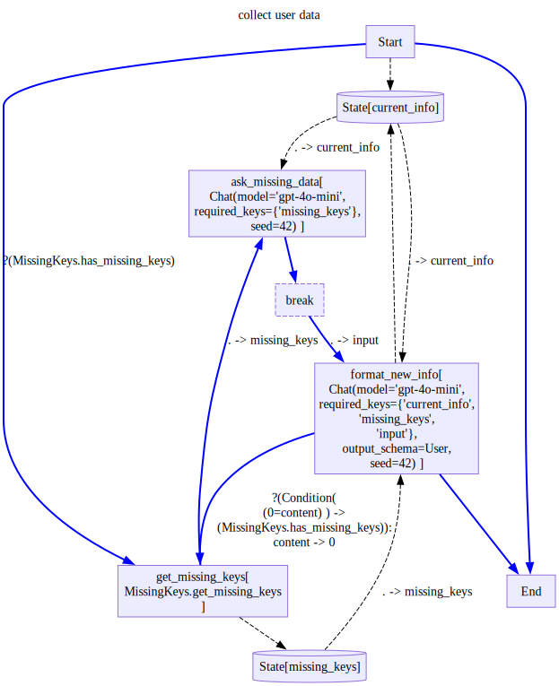
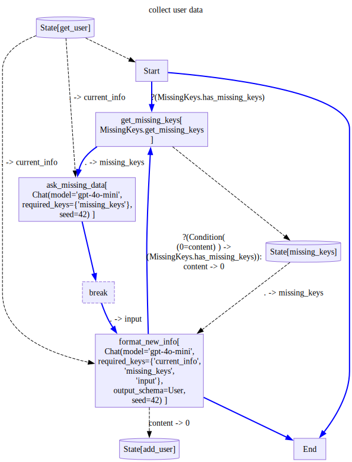

from pydantic import BaseModel,ConfigDict
from typing import Optional, Any
from sqlmodel import SQLModel, Session, select, Field
from stringdale import Define,V,E,Condition
from stringdale.chat import Chat
from stringdale.db import temp_sql_dbInteractive QA with DB
Let us see a slightly more sophisticated version of the collecting user info workflow we saw in the decision diagram tutorial.
For this demo we will use a small utility for creating a shared in-memory sqlite db and connecting to it via sqlalchemy.
We will also use SQLModel to sync our database schema with the output schema we will request our LLM to parse from text.
engine = temp_sql_db()Let us make our user data object
class User(SQLModel, table=True,extend_existing=True):
id: int = Field(default=None, primary_key=True)
name: Optional[str] = Field(default=None)
age: Optional[int] = Field(default=None)
email: Optional[str] = Field(default=None)
# Loads the schema of all SQLModel subclasses into the db
SQLModel.metadata.create_all(engine)Let us recall our previous get user data workflow:
ask_missing_data = Chat(
model='gpt-4o-mini',
messages=[
{'role':'system','content':'''
You are a helpful assistant asks the user for missing information.
Do not ask for keys if they are not a part of the missing keys
Ask the user for the following missing keys:
{{missing_keys}}
'''}])
format_new_info = Chat(
model='gpt-4o-mini',
messages=[
{'role':'system','content':'''
You are a helpful assistant that gets user data and makes sure it is complete.
If you are not sure that you were given the relevant information, put None in the relevant field.
Fill part of the missing keys based on the user data.
If the user didnt provide info an a given missing key, leave it empty
{% if current_info %}
The information we have so far is:
{{current_info}}
{% endif %}
The missing keys are:
{{missing_keys}}
'''},
{'role':'user','content':'{{input}}'},
],
output_schema=User)
class MissingKeys():
def __init__(self,keys):
self.keys = keys
def get_missing_keys(self,obj):
return [key for key in self.keys if getattr(obj,key,None) is None]
def has_missing_keys(self,obj):
return len(self.get_missing_keys(obj)) > 0
missing = MissingKeys(['name','age'])with Define('collect user data',type='decision') as UserQA:
V('Start',
outputs=[
('get_missing_keys',missing.has_missing_keys),
('End',),
('state/current_info',)
])
V('get_missing_keys',missing.get_missing_keys,
outputs=[
'ask_missing_data(missing_keys)',
'state/missing_keys'
])
V('ask_missing_data',ask_missing_data,
inputs=['state/current_info(current_info)'],
outputs=['break'] )
V('break',is_break=True,outputs=['format_new_info(input)'])
V('format_new_info',format_new_info,
inputs=[
'state/current_info(current_info)',
'state/missing_keys(missing_keys=.)'
],
outputs=[
('get_missing_keys(0=content)',Condition(missing.has_missing_keys,'(0=content)')),
'End',
'state/current_info'
])
UserQA.draw(direction='TB')
Now, let us create our custom state, which will have methods for getting and setting users in our db.
class UserDBState(BaseModel):
model_config = ConfigDict(extra='allow')
engine: Optional[Any] = None
user_id: Optional[int] = None
# this is a private attribute that will not be serialized
# used to cache the user object to avoid extra db calls
_user:Optional[User]=None
def get_user(self):
user_id = self.user_id
if not self._user is None:
return self._user
with Session(self.engine) as session:
user = session.exec(select(User).where(User.id == user_id)).first()
self._user = user
if self._user is None:
self._user = User(id=user_id)
return self._user
def add_user(self,user_data):
self._user = user_data
with Session(self.engine) as session:
session.merge(user_data)
session.commit()Our new DB workflow will look very similar to the old one, but instead of reading and writing to current info, we will use the get_user and add_user methods of our state object.
We will also read the user info into start, so we can skip the workflow if we have all the info we need.
with Define('collect user data',type='decision',state=UserDBState()) as UserQADB:
V('Start',
inputs=['state/get_user(0=.)'],
outputs=[
('get_missing_keys',missing.has_missing_keys),
('End',),
])
V('get_missing_keys',missing.get_missing_keys,
outputs=[
'ask_missing_data(missing_keys)',
'state/missing_keys'
])
V('ask_missing_data',ask_missing_data,
inputs=['state/get_user(current_info)'],
outputs=['break'] )
V('break',is_break=True,outputs=['format_new_info(input)'])
V('format_new_info',format_new_info,
inputs=[
'state/get_user(current_info)',
'state/missing_keys(missing_keys=.)'
],
outputs=[
('get_missing_keys(0=content)',Condition(missing.has_missing_keys,'(0=content)')),
'End',
'state/add_user(0=content)'
])
UserQADB.draw(direction='TB')
d = UserQADB()
d.state.user_id = 1
d.state.engine = engine
d.state.get_user()User(id=1, name=None, age=None, email=None)d.run_all(input=None){'role': 'assistant',
'content': 'Could you please provide your name and age?',
'meta': {'input_tokens': 50, 'output_tokens': 9}}d.run_all('alice, 25yo'){'role': 'assistant',
'content': User(id=1, name='alice', age=25, email=None),
'meta': {'input_tokens': 356, 'output_tokens': 29}}Since we have saved the result to a DB, if we try to run this diagram again for the same user, we will skip straight to the end, since all user data will be retrieved from the DB.
d = UserQADB()
d.state.user_id = 1
d.state.engine = engine
d.state.get_user()User(age=25, name='alice', id=1, email=None)d.run_all(input=None)User(age=25, name='alice', id=1, email=None)